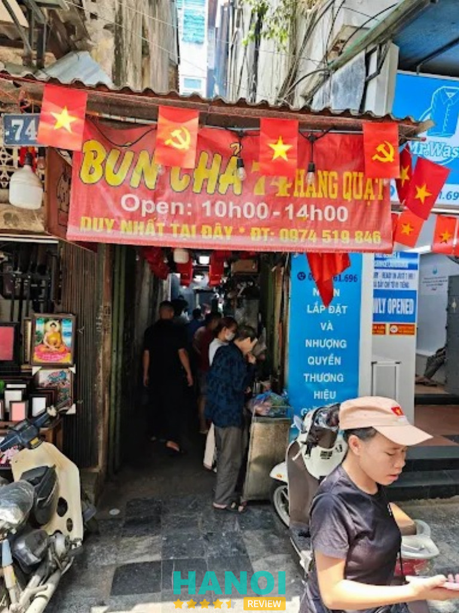
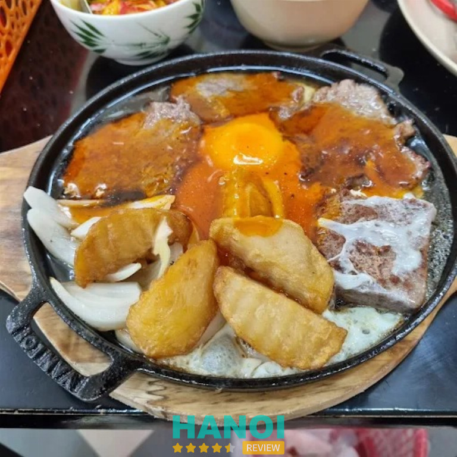
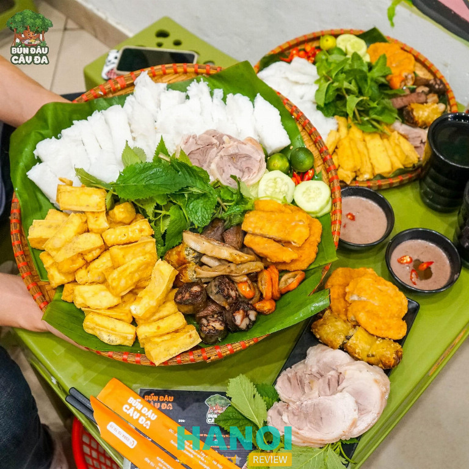
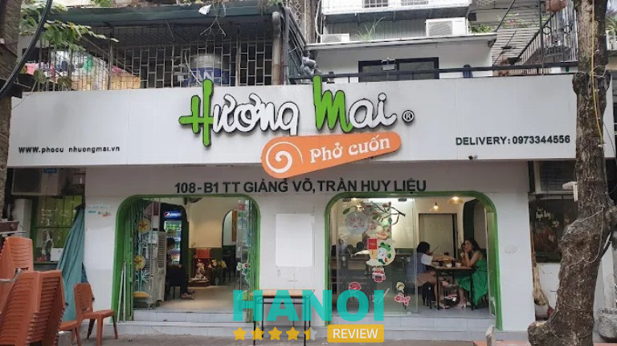
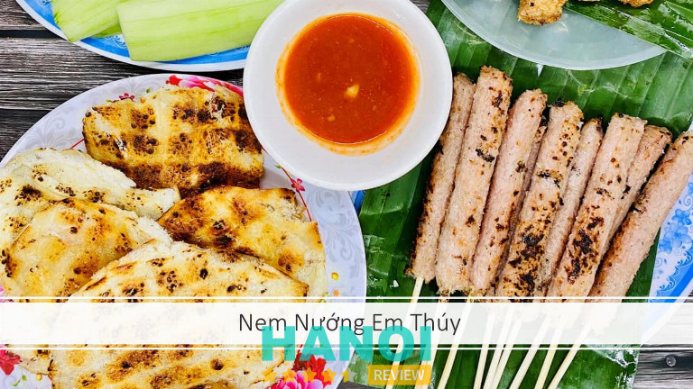
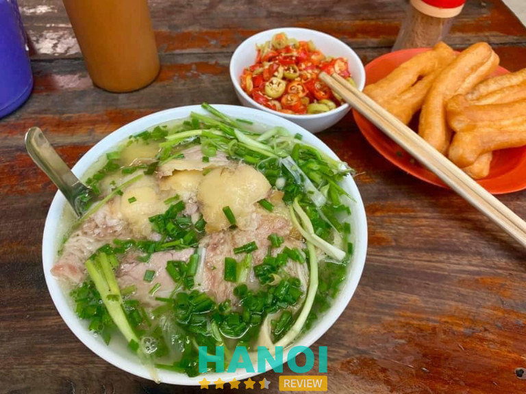
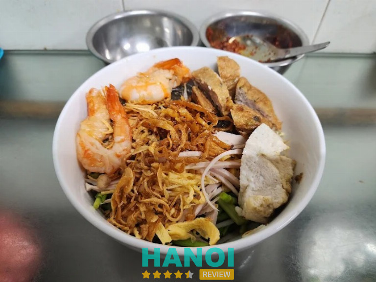
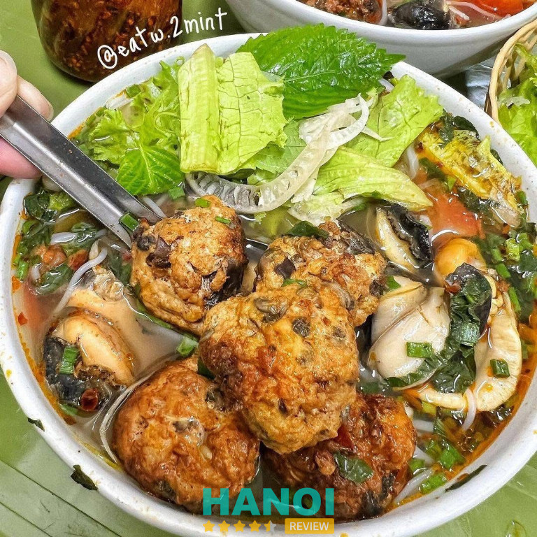
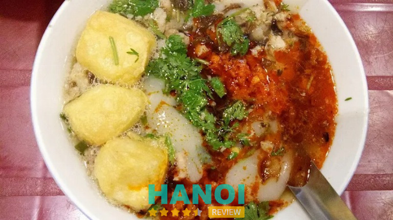
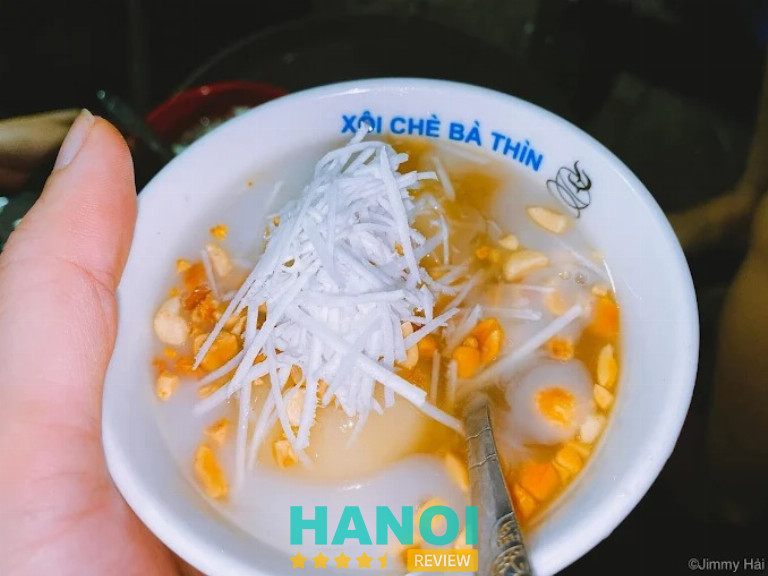

10 Quán ăn bình dân ở Hà Nội ngon, giá rẻ phù hợp mọi người
Nếu bạn đang tìm kiếm quán ăn bình dân ở Hà Nội thì có vô số lựa chọn hấp dẫn. Nơi đây nổi tiếng với sự đa dạng ẩm thực, giá cả hợp lý, phù hợp cho cả sinh viên, nhân viên văn phòng lẫn du khách. Những quán ăn này mang đến trải nghiệm thân thiện, thoải mái, vừa tiết kiệm chi phí lại vừa đảm bảo chất lượng. Đặc biệt, thực đơn phong phú chiều lòng khẩu vị nhiều thực khách khác nhau.
Top 10 quán ăn bình dân tại Hà Nội được nhiều người yêu thích nhất
Quán ăn bình dân ở Hà Nội luôn hấp dẫn nhờ chất lượng ổn định và chi phí hợp lý. Đây là điểm dừng chân lý tưởng để bạn thưởng thức hương vị địa phương mà không lo vượt quá ngân sách. Sự đa dạng trong món ăn mang đến cho bạn trải nghiệm phong phú, tiện lợi và đáng nhớ.
Bún Chả 74 Hàng Quạt – Hoàn Kiếm
- Giờ mở cửa: 10h00 – 14h00
- Giá tham khảo: 25.000 – 40.000 VNĐ
Bún Chả 74 Hàng Quạt là một trong những quán ăn Hà Nội bình dân nổi tiếng nhất nằm trong khu phố cổ. Quán chỉ mở buổi trưa nhưng lúc nào cũng đông khách, từ người dân địa phương đến du khách nước ngoài.
Với vị trí đắc địa giữa trung tâm thủ đô, Bún Chả Hàng Quạt không chỉ mang lại hương vị ẩm thực truyền thống mà còn gắn liền với ký ức về một Hà Nội xưa mộc mạc, giản dị. Đây chính là địa điểm không thể bỏ qua khi tìm quán ăn Hà Nội bình dân chuẩn vị.

Điểm nổi bật của Bún Chả Hàng Quạt:
- Chả nướng trực tiếp trên than hoa, tạo mùi thơm hấp dẫn, giữ trọn hương vị.
- Chả viên và chả miếng được tẩm ướp đậm đà, thịt mềm ngọt, nạc và mỡ hòa quyện hài hòa.
- Nước chấm pha theo công thức gia truyền, chua ngọt vừa miệng, kết hợp rau sống tươi ngon.
- Không gian giản dị trong con ngõ nhỏ, phục vụ nhanh chóng, thân thiện.
- Giá cả bình dân, chỉ từ 25.000 – 40.000 VNĐ cho một suất bún chả đầy đặn.
Thực đơn chính:
- Bún chả truyền thống
- Chả viên nướng than hoa
- Chả miếng thơm ngậy
- Rau sống, dưa góp ăn kèm
Nếu bạn đang tìm một quán ăn Hà Nội bình dân để trải nghiệm hương vị bún chả đúng chất phố cổ, Bún Chả Hàng Quạt chắc chắn là lựa chọn hàng đầu. Món ăn tại đây không chỉ ngon, rẻ mà còn mang lại trải nghiệm văn hóa ẩm thực đặc trưng của thủ đô.
Thông tin liên hệ:
- Địa chỉ: Ngõ 74 Hàng Quạt, Q. Hoàn Kiếm, Hà Nội
- Điện thoại: 0974 519 846
Bánh Mì Trâm – Hoàn Kiếm
- Giờ mở cửa: 14h00 – 23h00
Bánh Mì Trâm là một trong những quán ăn Hà Nội bình dân lâu đời, nổi tiếng với hương vị truyền thống đặc trưng. Nằm ngay trên tuyến phố Hàng Bông sầm uất, quán đã gắn bó nhiều năm với người dân thủ đô cũng như du khách gần xa. Với uy tín, chất lượng và mức giá hợp lý, Bánh Mì Trâm trở thành điểm đến quen thuộc cho những ai yêu thích sự đơn giản, đậm chất Hà Nội.

Quán nổi bật với món bánh mì pate truyền thống, ăn kèm chả, lạp xưởng và dưa chuột. Pate được chế biến theo công thức riêng, béo ngậy, thơm lừng, tạo nên hương vị đặc biệt không lẫn với nơi nào.
Vỏ bánh luôn nóng hổi, giòn tan, khiến mỗi miếng ăn đều hấp dẫn. Ngoài ra, quán còn phục vụ bánh mì sốt vang nổi tiếng, với phần sốt đậm đà, thịt bò hầm nhừ, rất thích hợp để thưởng thức vào buổi chiều tối.
Thực đơn chính tại Bánh Mì Trâm:
- Bánh mì pate truyền thống
- Bánh mì pate chả
- Bánh mì pate lạp xưởng
- Bánh mì sốt vang
- Không gian & phục vụ
Không gian quán nhỏ, giản dị, chủ yếu phục vụ khách mang đi. Tuy lúc nào cũng đông khách nhưng phục vụ nhanh, chỉ 5 phút đã có bánh mì nóng hổi. Đây là điểm cộng lớn giúp khách hàng luôn hài lòng.
Mức giá dao động chỉ từ 30.000 – 50.000 VNĐ, phù hợp với học sinh, sinh viên, người lao động và mọi thực khách muốn thưởng thức bữa ăn ngon – bổ – rẻ.
Nếu bạn đang tìm quán ăn Hà Nội bình dân vừa ngon, vừa rẻ lại mang đậm hương vị truyền thống, thì Bánh Mì Trâm – 252 Hàng Bông chắc chắn là lựa chọn số một.
Thông tin liên hệ:
- Địa chỉ: 30 P. Đình Ngang, Cửa Nam, Hoàn Kiếm, Hà Nội
- Điện thoại: 0705 956 789
- Email: banhmytram@gmail.com
- Facebook: fb.com/100090664433076
Bún Đậu Cây Đa – Tây Hồ
- Giờ mở cửa: 10h00 – 21h00
- Giá tham khảo: 30.000 – 80.000 VNĐ
Bún Đậu Cây Đa là một trong những quán ăn bình dân ở Hà Nội được yêu thích bởi thực khách nhiều năm nay. Tọa lạc trên con phố Thụy Khuê sầm uất, quán mang đến hương vị bún đậu mắm tôm chuẩn truyền thống nhưng vẫn giữ được nét riêng biệt.
Nhờ chất lượng ổn định, giá cả hợp lý và không gian thoáng mát, Bún Đậu Cây Đa đã trở thành điểm đến quen thuộc cho sinh viên, nhân viên văn phòng và những nhóm bạn muốn thưởng thức ẩm thực dân dã.

Điểm nổi bật của quán là đậu phụ rán vàng ruộm, giòn bên ngoài nhưng mềm mịn bên trong. Mắm tôm được pha chế khéo léo cùng quất, ớt và đường, tạo nên hương vị đậm đà khó quên. Mẹt bún đầy đủ topping hấp dẫn như chả cốm, nem rán, dồi sụn, tai heo và lòng lợn, đem lại trải nghiệm trọn vẹn cho thực khách.
Thực đơn phong phú:
- Bún đậu mắm tôm (suất nhỏ, vừa, đầy đủ)
- Topping thêm: chả cốm, nem rán, lòng, dồi sụn
- Đồ uống đi kèm: trà đá, nước ngọt, bia hơi
- Phần bún thêm cho nhóm đông người
Quán có không gian rộng rãi, thoáng mát, phù hợp cho nhóm bạn đi đông. Nhân viên phục vụ nhanh nhẹn, thân thiện, giúp khách hàng luôn cảm thấy thoải mái khi dùng bữa.
Nếu bạn đang tìm kiếm một quán ăn bình dân ở Hà Nội ngon, rẻ và chuẩn vị, Bún Đậu Cây Đa chắc chắn là lựa chọn không thể bỏ qua. Với chất lượng món ăn ổn định, giá cả hợp lý cùng phong cách phục vụ tận tình, đây là điểm hẹn lý tưởng để thưởng thức hương vị ẩm thực dân gian.
Thông tin liên hệ:
- Địa chỉ: 235B Thụy Khuê, Q. Tây Hồ, Hà Nội
- Điện thoại: 0984 101 010
- Email: bundaucayda@gmail.com
- Facebook: fb.com/bundaucayda
Phở Cuốn Hương Mai – Ba Đình
- Giờ mở cừa: 08:30 – 22:00
Phở Cuốn Hương Mai là một trong những quán ăn Hà Nội bình dân nổi tiếng, được nhiều thực khách biết đến bởi hương vị đậm chất ẩm thực Thủ đô. Nằm tại vị trí trung tâm quận Ba Đình, quán có không gian khang trang, sạch sẽ, phục vụ chu đáo và nhanh nhẹn, dù luôn đông khách. Đây là địa chỉ quen thuộc với nhiều người sành ăn bởi chất lượng ổn định cùng mức giá hợp lý.

Quán ăn Hà Nội bình dân này thu hút đông đảo thực khách không chỉ bởi vị trí thuận lợi mà còn bởi sự đa dạng trong thực đơn. Món nổi bật nhất chính là phở cuốn với bánh phở trắng mịn, thịt bò tươi, rau thơm, xà lách, chấm cùng nước mắm cay cay. Ngoài ra, phở chiên phồng cũng là lựa chọn được yêu thích, với lớp bánh phở chiên giòn, thơm vị trứng, ăn kèm nhiều thịt bò xào rau cải đậm đà.
Các món ăn tại Phở Cuốn Hương Mai:
- Phở cuốn truyền thống
- Phở chiên phồng
- Phở trộn hấp dẫn
- Phở xào rau thịt đậm vị
- Chả ngan nướng thơm ngon
- Các món ăn kèm khác
Giá tham khảo tại quán dao động từ 50.000 – 100.000 VNĐ, khá hợp lý với số lượng nhiều và chất lượng ổn định. Phong cách phục vụ nhiệt tình, nhanh nhẹn giúp khách hàng luôn cảm thấy thoải mái và hài lòng.
Phở Cuốn Hương Mai xứng đáng là một trong những quán ăn Hà Nội bình dân bạn nên thử ít nhất một lần. Từ không gian sạch sẽ, món ăn đa dạng cho đến giá cả hợp lý, tất cả tạo nên điểm đến lý tưởng cho những ai yêu thích ẩm thực Hà Nội.
Thông tin liên hệ:
- Địa chỉ: 108 B1 TT. Giảng Võ, Trần Huy Liệu, Q. Ba Đình, Hà Nội
- Điện thoại: 0973 344 556
- Email: thangdh@gmail.com
- Website: phocuon.vn
- Facebook: fb.com/Phocuonvn
Nem Chua Nướng Em Thúy – Hoàn Kiếm
- Giờ mở cửa: 14h00 – 23h00
- Giá tham khảo: 20.000 – 80.000 VNĐ
Nem Chua Nướng Em Thúy là một trong những quán ăn Hà Nội bình dân được giới trẻ yêu thích. Nằm trên phố Ấu Triệu sầm uất, quán trở thành điểm đến quen thuộc của học sinh, sinh viên và dân văn phòng muốn tìm một địa chỉ tụ tập bạn bè.
Với hương vị nem chua nướng than hoa thơm lừng, kết hợp cùng nước chấm tương ớt cay ngọt đặc trưng, nơi đây nhanh chóng khẳng định được uy tín và vị thế trong danh sách các quán ăn vặt ngon ở Hà Nội.

Nem chua nướng tại Em Thúy được chế biến khéo léo, giữ nguyên sắc hồng tự nhiên của thịt, mang đến vị chua ngọt hài hòa và cảm giác giòn sần sật khi thưởng thức. Chấm thêm chút tương ớt sánh đặc, cay nhẹ, món ăn trở nên hấp dẫn hơn bao giờ hết. Ngoài nem nướng, quán còn phục vụ đa dạng các món ăn vặt khác, đáp ứng nhu cầu thưởng thức phong phú của khách hàng.
Thực đơn tiêu biểu:
- Nem chua nướng than hoa
- Cá chỉ vàng nướng
- Cá bò nướng
- Mực nướng
- Khoai tây chiên, khoai lang nướng
Không gian quán giản dị với bàn ghế nhựa đỏ bày ngoài vỉa hè, tạo cảm giác gần gũi, nhộn nhịp. Khách đến đây không chỉ thưởng thức đồ ăn ngon mà còn trải nghiệm không khí sôi động, đặc trưng của ẩm thực đường phố Hà Nội. Đội ngũ phục vụ nhanh nhẹn, nhiệt tình, luôn mang đến sự thoải mái cho thực khách.
Nem Chua Nướng Em Thúy xứng đáng là địa chỉ ăn vặt bình dân ở Hà Nội mà bạn không nên bỏ lỡ. Nếu bạn đang tìm một quán ăn ngon, giá rẻ để tụ tập bạn bè, thì nơi đây chắc chắn là lựa chọn lý tưởng.
Thông tin liên hệ:
- Địa chỉ: 10 Ấu Triệu, Hoàn Kiếm, Hà Nội
- Điện thoại: 024 3824 4391
- Facebook: fb.com/100063697564069
Phở Bát Đàn – Đống Đa
- Giờ mở cửa: 6h30 – 22h30
- Giá tham khảo: 30.000 – 55.000 VNĐ
Phở Bát Đàn là một trong những quán ăn Hà Nội bình dân nổi tiếng, gắn liền với nét đẹp ẩm thực truyền thống thủ đô. Với vị trí thuận lợi tại Quận Đống Đa, quán luôn thu hút đông đảo thực khách từ người dân địa phương đến khách du lịch trong và ngoài nước.
Điểm mạnh của Phở Bát Đàn chính là sự giữ gìn hương vị cổ truyền, nước dùng ninh từ xương bò trong nhiều giờ liền, mang đến tô phở đậm đà, trọn vị mà không cần dùng mì chính.

Điểm nổi bật của Phở Bát Đàn:
- Nước dùng: Đậm vị, ngọt thanh tự nhiên từ xương bò.
- Thịt bò: Được chọn lọc kỹ, thái mỏng, mềm và ngọt.
- Không gian: Nhỏ, cổ kính, gợi nhớ Hà Nội xưa.
- Phục vụ: Khách tự phục vụ, nhanh chóng và gọn gàng.
- Văn hóa đặc trưng: Thực khách xếp hàng để mua phở – một nét thú vị khó quên.
Thực đơn chính tại quán:
- Phở bò tái
- Phở bò chín
- Phở bò tái nạm gầu gân
- Quẩy nóng ăn kèm phở
Phở Bát Đàn không chỉ là một quán ăn Hà Nội bình dân mà còn là điểm đến lưu giữ tinh hoa ẩm thực truyền thống. Với hương vị thơm ngon, chất lượng ổn định và nét văn hóa “xếp hàng” độc đáo, nơi đây chắc chắn là lựa chọn tuyệt vời cho những ai muốn trải nghiệm phở bò Hà Nội đúng chuẩn.
Thông tin liên hệ:
- Địa chỉ: 36 Nguyên Hồng, Q. Đống Đa, Hà Nội
- Điện thoại: 024 3569 0705
Miến Trộn Mực Ngõ Trung Yên – Hoàn Kiếm
- Giờ mở cửa: 11h00 – 18h00
- Giá tham khảo: 40.000 VNĐ
Miến Trộn Mực Ngõ Trung Yên là một trong những quán ăn bình dân ngon ở Hà Nội được nhiều thực khách yêu thích. Tọa lạc trong con ngõ nhỏ ở khu phố cổ, quán mang đến một trải nghiệm ẩm thực độc đáo, vừa dân dã vừa lạ miệng.
Dù không gian khiêm tốn, quán luôn đông khách bởi hương vị đặc trưng khó tìm ở nơi khác. Đây là địa chỉ quen thuộc của giới trẻ và những ai muốn khám phá ẩm thực bình dân Hà Nội.

Điểm nổi bật của quán:
- Món ăn đặc trưng: Miến trộn mực với sự kết hợp hài hòa giữa miến dong dai, mực giòn sần sật, cùng chả cá, trứng tráng, giò lụa thái mỏng.
- Nước sốt trộn đặc biệt: Vị chua cay, mặn ngọt cân bằng, giúp từng sợi miến thêm đậm đà.
- Topping phong phú: Giá đỗ, rau thơm, hành phi, lạc rang giòn bùi.
- Không gian & phục vụ: Quán nhỏ, bàn ghế thấp, phục vụ nhanh nhẹn, thân thiện.
- Giá cả hợp lý: Chỉ 40.000 VNĐ cho một tô đầy đặn, rất phù hợp với học sinh, sinh viên và người đi làm.
Danh sách món chính:
- Miến trộn mực
- Chả cá ăn kèm
- Giò lụa thái mỏng
- Trứng tráng cắt sợi
- Mực chiên giòn
Miến Trộn Mực Ngõ Trung Yên là lựa chọn tuyệt vời cho những ai tìm kiếm quán ăn bình dân ngon ở Hà Nội. Với hương vị độc đáo, mức giá hợp lý và không gian gần gũi, quán chắc chắn sẽ làm hài lòng cả những thực khách khó tính.
Thông tin liên hệ:
- Địa chỉ: 1 Ngõ Trung Yên, Quận Hoàn Kiếm, Hà Nội
Bún Ốc Cô Huệ – Hoàn Kiếm
- Giờ mở cửa: 6h30 – 14h00
- Giá tham khảo: 20.000 – 50.000 VNĐ
Nếu nhắc đến quán ăn bình dân ở Hà Nội, chắc chắn không thể bỏ qua Bún Ốc Cô Huệ trên phố Nguyễn Siêu. Quán đã tồn tại nhiều năm, được biết đến như một địa chỉ quen thuộc của người dân Hà Nội và du khách. Vị trí gần chợ Đồng Xuân càng khiến nơi đây trở thành điểm dừng chân lý tưởng để thưởng thức món bún ốc dân dã.
Với mức giá bình dân, hương vị truyền thống cùng sự thân thiện của chủ quán, Bún Ốc Cô Huệ là lựa chọn tuyệt vời cho những ai muốn khám phá ẩm thực vỉa hè Hà Nội.

Điểm nhấn lớn nhất của quán chính là bát bún ốc nóng hổi, đầy đặn, nước dùng đậm đà chua thanh, quyện cùng mùi mắm tôm và vị cay nồng của ớt. Ngoài bún ốc nóng, quán còn phục vụ bún ốc nguội – món ăn độc đáo với nước chấm để riêng trong chum, được chế biến từ nước luộc ốc, xương ninh và dấm, tạo nên hương vị khó quên.
Điểm nổi bật tại Bún Ốc Cô Huệ:
- Ốc tươi ngon, giòn sần sật, chế biến sạch sẽ.
- Bát bún đầy đặn, topping phong phú như chả ốc, giò bò.
- Không gian vỉa hè thoáng mát, mang đậm chất Hà Nội.
- Giá cả hợp lý, phù hợp cho bữa ăn thường ngày.
- Phục vụ nhanh chóng, chủ quán vui tính, thân thiện.
Bún Ốc Cô Huệ là một trong những quán ăn bình dân ở Hà Nội nổi tiếng với hương vị truyền thống và giá cả dễ chịu. Đây không chỉ là nơi thưởng thức bún ốc ngon mà còn mang lại trải nghiệm ẩm thực vỉa hè đúng điệu. Nếu có dịp ghé phố cổ, bạn nhất định nên thử một lần.
Thông tin liên hệ:
- Địa chỉ: 43 Nguyễn Siêu, Hoàn Kiếm, Hà Nội
- Điện thoại: 0332 562 416
- Email: nhungnana9x1998@gmail.com
- Facebook.com/100054535716339
Bánh Đúc Nóng – Hai Bà Trưng
- Giờ mở cửa: 8h00 – 21h00
- Giá tham khảo: 20.000 – 30.000 VNĐ
Bánh Đúc Nóng tại số 8 Ngõ 8B Lê Ngọc Hân là một trong những quán ăn Hà Nội bình dân lâu đời, nổi tiếng với hương vị giản dị nhưng đậm đà. Nằm trong con ngõ nhỏ, khách đến ăn phải gửi xe bên ngoài rồi đi bộ vào quán, tạo cảm giác mộc mạc, gần gũi. Với mức giá bình dân, món bánh đúc nóng tại đây đã trở thành lựa chọn quen thuộc của nhiều thế hệ thực khách.

Điểm nổi bật của quán:
- Bánh đúc mềm dẻo, nóng hổi, ăn kèm với thịt băm, mộc nhĩ và rau thơm.
- Nước dùng được ninh từ xương, chan kèm có vị ngọt thanh tự nhiên, hòa quyện với hương vị đậm đà của topping.
- Nước mắm pha vừa vặn, không quá mặn, giúp món ăn giữ được sự cân bằng.
- Giá cả hợp túi tiền, phù hợp với nhiều đối tượng khách hàng.
Thực đơn chính:
- Bánh đúc nóng: món ăn đặc trưng, topping đầy đủ gồm thịt băm, mộc nhĩ, hành phi, rau thơm.
- Đồ uống đi kèm: trà đá, nước ngọt.
Quán có diện tích nhỏ, phong cách mộc mạc, phù hợp để ngồi thưởng thức nhanh một bát bánh đúc nóng trong những ngày se lạnh. Phục vụ nhanh gọn, thân thiện, mang lại cảm giác gần gũi như ăn tại nhà.
Nếu bạn đang tìm một quán ăn Hà Nội bình dân mang hương vị truyền thống, giá rẻ và chất lượng, thì Bánh Đúc Nóng Lê Ngọc Hân chắc chắn là lựa chọn không thể bỏ qua.
Thông tin liên hệ:
- Địa chỉ: 8 Ngõ 8B Lê Ngọc Hân, Q. Hai Bà Trưng, Hà Nội
- Điện thoại: 0348 380 313
Xôi Chè Bà Thìn – Hoàn Kiếm
- Giờ mở cửa: 7h30 – 23h00
- Giá tham khảo: 15.000 – 25.000 VNĐ
Xôi Chè Bà Thìn là một trong những quán ăn Hà Nội bình dân nổi tiếng, gắn liền với ký ức của nhiều thế hệ người dân Thủ đô. Tọa lạc ngay phố Bát Đàn, quán đã tồn tại hàng chục năm, mang đậm hương vị truyền thống Bắc Bộ.
Với uy tín lâu đời cùng chất lượng món ăn ổn định, Xôi Chè Bà Thìn trở thành điểm đến quen thuộc của thực khách khi nhắc đến chè Hà Nội. Đây không chỉ là nơi để thưởng thức món ăn vặt giá rẻ mà còn là nơi lưu giữ hương vị cổ xưa hiếm có.

Điểm nổi bật của quán chính là sự phong phú của các loại chè truyền thống và xôi thơm dẻo. Chè đỗ xanh, chè đỗ đen, chè hạt sen hay chè bưởi đều giữ được vị ngọt thanh, không gắt. Đặc biệt, món chè kho và chè bà cốt được nhiều khách yêu thích, nhất là vào mùa đông. Nước cốt dừa béo ngậy được chế biến từ dừa tươi, tăng thêm hương vị đậm đà cho từng bát chè.
Các món nổi bật tại Xôi Chè Bà Thìn:
- Chè đậu xanh, chè đỗ đen, chè hạt sen, chè bưởi
- Xôi vò, xôi chè dẻo thơm
- Chè kho, chè bà cốt (theo mùa)
- Kẹo lạc, cốm xào, chè con ong đóng gói sẵn
- Không gian & phục vụ
Quán nhỏ, mang nét giản dị, cổ kính nhưng lại tạo cảm giác thân quen. Đội ngũ phục vụ nhanh nhẹn, thân thiện, giúp thực khách có trải nghiệm thoải mái.
Khi tìm quán ăn Hà Nội bình dân, Xôi Chè Bà Thìn chắc chắn là lựa chọn lý tưởng. Với mức giá hợp lý, hương vị truyền thống và chất lượng đảm bảo, đây là nơi lý tưởng để thưởng thức chè và xôi giữa lòng phố cổ.
Thông tin liên hệ:
- Địa chỉ: 1 Bát Đàn, Hoàn Kiếm, Hà Nội
- Điện thoại: 0936 628 887
Tiêu chí chọn quán ăn bình dân ngon, chất lượng ở Hà Nội
Việc lựa chọn quán ăn bình dân ở Hà Nội cần dựa trên nhiều yếu tố quan trọng, đảm bảo vừa ngon, rẻ, vừa phù hợp cho nhiều đối tượng khách hàng.
- Chất lượng món ăn: Quán phải giữ hương vị truyền thống, nguyên liệu tươi ngon và chế biến đảm bảo vệ sinh an toàn thực phẩm.
- Giá cả hợp lý: Mức giá bình dân phù hợp sinh viên, nhân viên văn phòng, đảm bảo cân bằng giữa chi phí và chất lượng món ăn.
- Không gian thoải mái: Quán ăn sạch sẽ, thoáng mát, có chỗ ngồi thuận tiện giúp thực khách cảm thấy dễ chịu khi dùng bữa.
- Phục vụ nhanh chóng: Nhân viên nhiệt tình, thao tác nhanh, rút ngắn thời gian chờ đợi nhưng vẫn giữ sự chu đáo, thân thiện.
- Vị trí thuận tiện: Quán nằm gần trung tâm, khu đông dân hoặc dễ tìm kiếm giúp khách hàng tiết kiệm thời gian di chuyển.
- Thực đơn đa dạng: Có nhiều món ăn phong phú, phù hợp với khẩu vị của nhiều nhóm khách hàng khác nhau, từ bữa chính đến ăn vặt.
- Đánh giá tích cực: Được nhiều khách hàng cũ phản hồi tốt, thường xuyên quay lại và giới thiệu cho bạn bè, tạo độ uy tín cao.
Nhìn chung, quán ăn bình dân ở Hà Nội không chỉ đáp ứng nhu cầu về chi phí mà còn mang lại giá trị trải nghiệm ẩm thực tuyệt vời. Bạn có thể yên tâm lựa chọn dựa trên tiêu chí chất lượng, giá cả, không gian và dịch vụ. Đây thực sự là điểm đến hoàn hảo cho sinh viên, người lao động hay du khách yêu thích ẩm thực địa phương. Hãy thử ghé một lần và cảm nhận sự thân thiện, gần gũi trong từng món ăn.
Có thể bạn quan tâm
- 10 Cửa hàng giường tầng sinh viên tại Hà Nội giá tốt, chất lượng bền đẹp
- 10 Quán lẩu tại Hà Nội giá rẻ, ngon bất bại cho giới sành ăn
- 10 Món ngon vỉa hè ở Hà Nội hấp dẫn, giá cả bình dân
- 5 Dịch vụ cho thuê PC, Laptop tại Hà Nội chất lượng, giá tốt
DOANH NGHIỆP: Đăng tải thông tin MIỄN PHÍ.
Tin đọc nhiều


10 Quán lẩu tại Hà Nội giá rẻ, ngon bất bại cho giới sành ăn
Các quán lẩu tại Hà Nội dường như đã trở thành một nét ẩm thực đặc trưng của thủ đô. Đến đây bạn vừa được...
10 Quán đồ Âu ở Hà Nội ngon, giá cả hợp lý, phục vụ tận...
Nếu bạn đang tìm kiếm quán đồ Âu ở Hà Nội vừa ngon vừa giá hợp lý, trải nghiệm không gian thoải mái, đây chính...
10 Quán ăn Trung Quốc ở Hà Nội ngon, giá cả hợp lý, phục vụ...
Quán ăn Trung Quốc ở Hà Nội luôn thu hút thực khách nhờ hương vị chính gốc, không gian ấm cúng và dịch vụ chu...

5 Quán phở bò tại Hà Nội thơm ngon, đặc trưng hương vị miền Bắc
Phở đã trở thành "biểu tượng ẩm thực" của Việt Nam trong mắt bạn bè quốc tế, vì thế các quán phở bò tại Hà...

Trở thành người đầu tiên bình luận cho bài viết này!